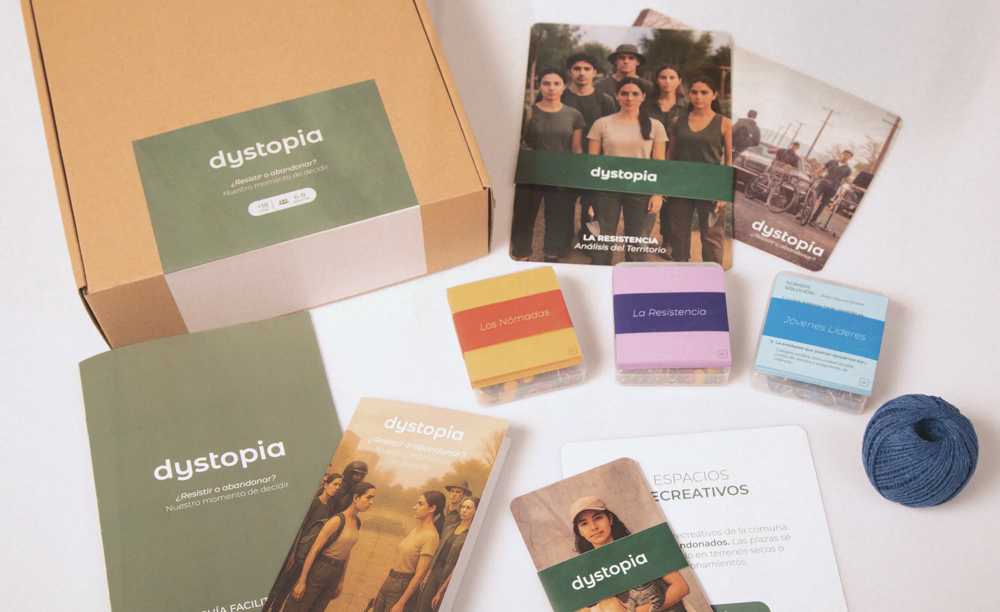
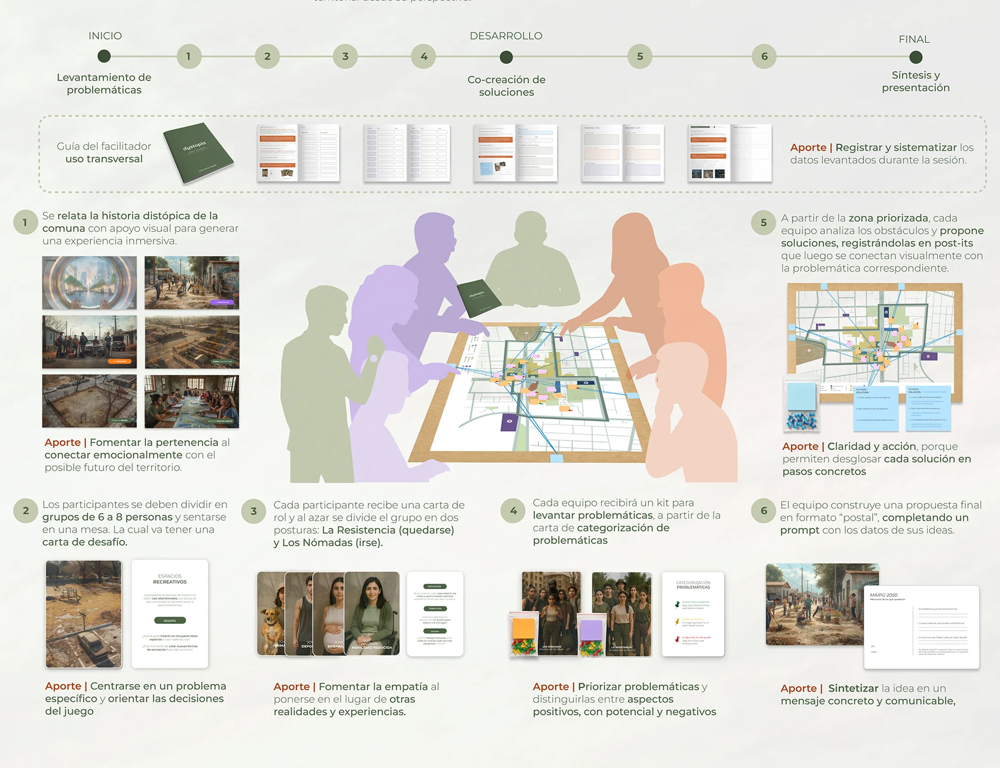
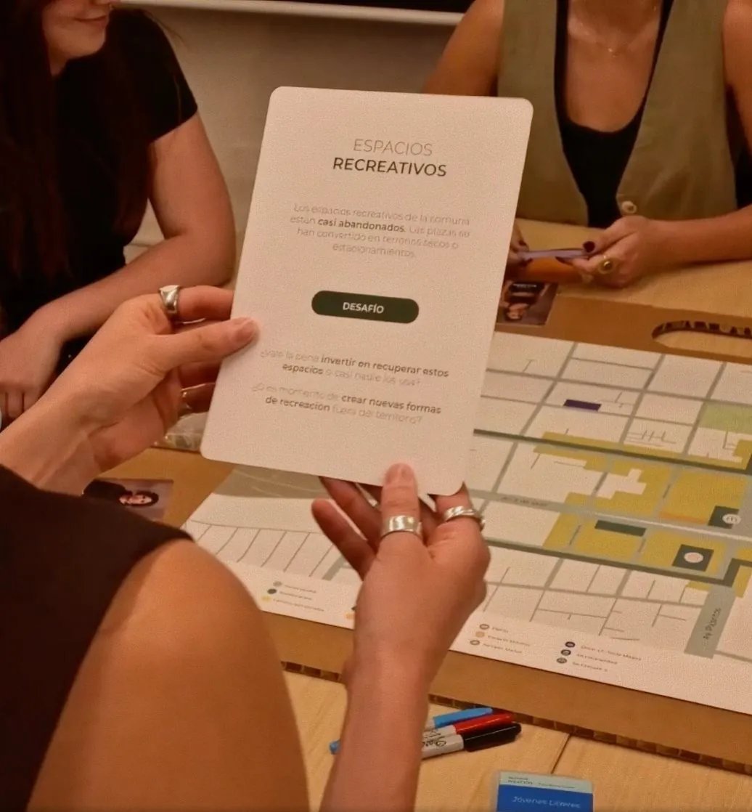
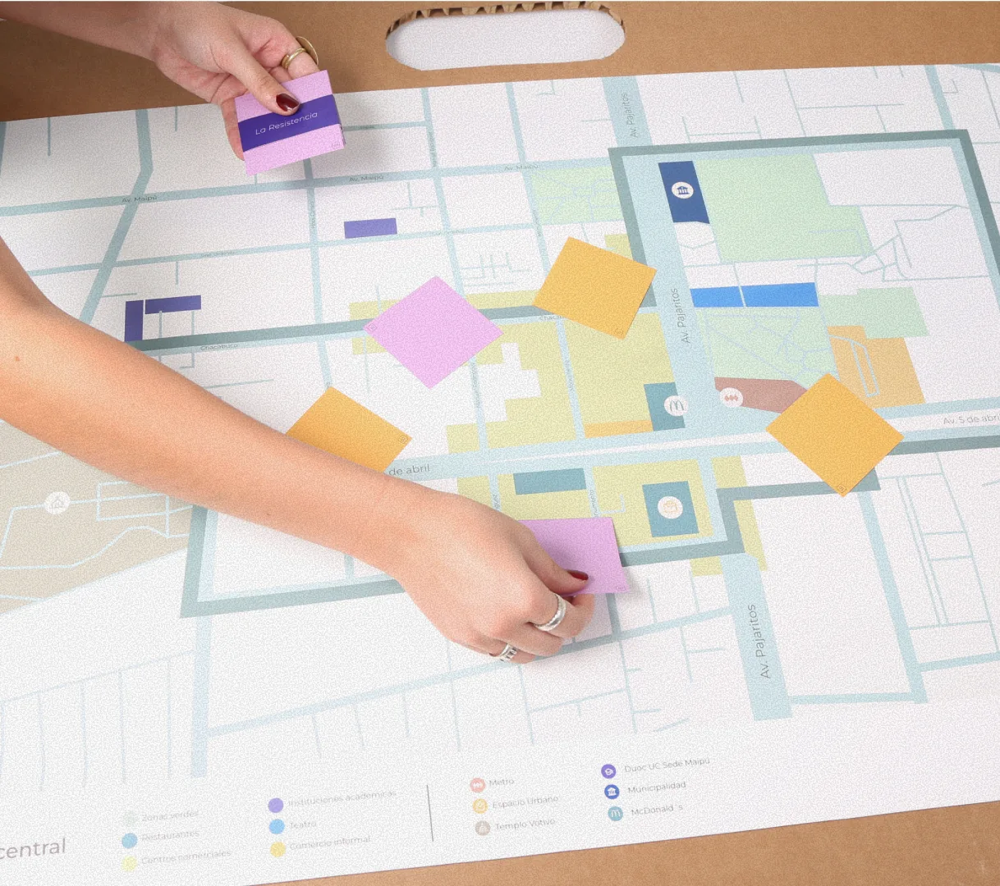
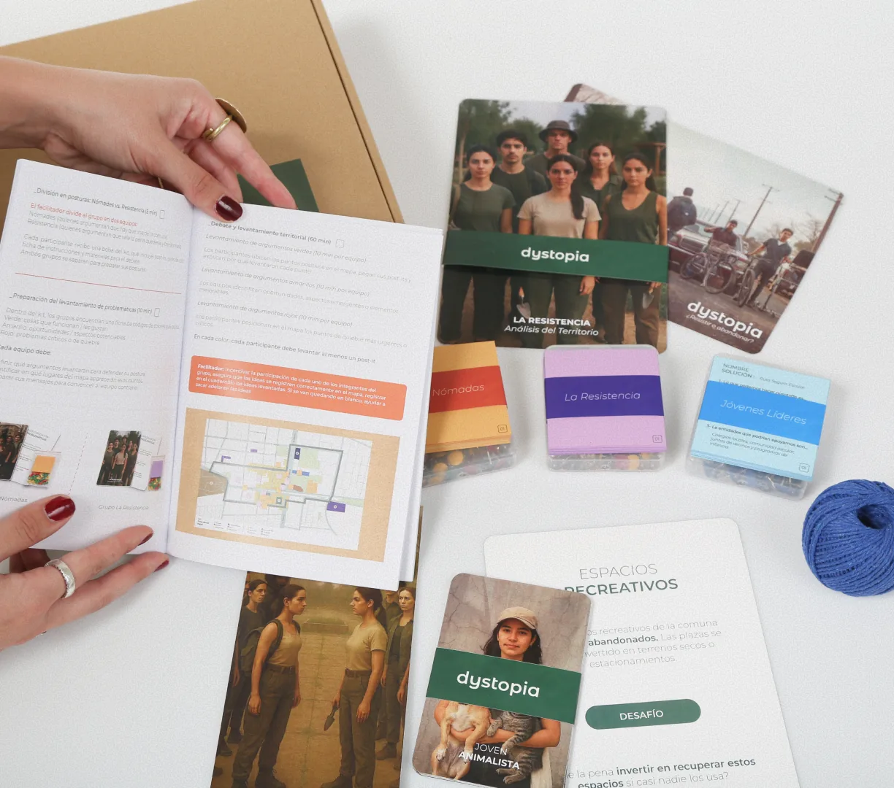
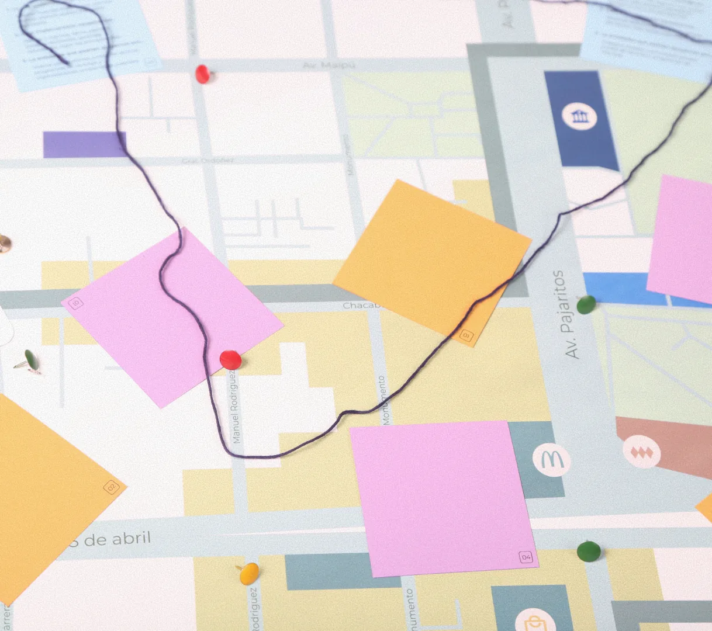

dystopia
A methodological interface to bring young people in Maipú back into neighbourhood life.
2025
Taller VIII, Diseño UC
Municipality of Maipú, urban planning team
4 designers
Horizontal teamwork across every stage of the project. I led the training sessions and the explainer video.

Young people cross the district but do not belong to it
Maipú is experiencing a decline in neighbourhood life. Young people move through the district every day but find no meaningful places to meet, and much of their social life has shifted online. dystopia gives the municipality's urban planning team a way to make that disconnection visible and to open participatory processes with young people that rebuild community ties.





Fieldwork and participatory sessions with young students from Maipú, with the urban planning team as main user
Presented to a commission from the Municipality of Maipú. Highest grade in Taller VIII.
Participation needs formats that fit young people's time and language, not just an open invitation.